Chapitre 4 Modèle de régression linéaire, suite
Introduction au chapitre blah blah…
4.1 Régression multiple
On va étendre le modèle précédent en ajoutant plusieurs prédicteurs, continus et/ou catégoriels. Pourquoi faire ?
Contrôle des facteurs de confusion (e.g., spurious correlations, simpson’s paradox). Un facteur de confusion est une variable aléatoire qui influence à la fois la variable dépendante et les variables explicatives. Une approche multivariée peut nous aider à démêler les influences causales de différents prédicteurs.
Multiples causes : un phénomène peut émerger sous l’influence de multiples causes.
Interactions : l’influence d’un prédicteur sur la variable observée peut dépendre de la valeur d’un autre prédicteur.
4.1.1 Associations fortuites
library(rethinking)
library(tidyverse)
data(WaffleDivorce) # import des données
df1 <- WaffleDivorce # import dans une dataframe nommée df1
str(df1) # structure des données## 'data.frame': 50 obs. of 13 variables:
## $ Location : Factor w/ 50 levels "Alabama","Alaska",..: 1 2 3 4 5 6 7 8 9 10 ...
## $ Loc : Factor w/ 50 levels "AK","AL","AR",..: 2 1 4 3 5 6 7 9 8 10 ...
## $ Population : num 4.78 0.71 6.33 2.92 37.25 ...
## $ MedianAgeMarriage: num 25.3 25.2 25.8 24.3 26.8 25.7 27.6 26.6 29.7 26.4 ...
## $ Marriage : num 20.2 26 20.3 26.4 19.1 23.5 17.1 23.1 17.7 17 ...
## $ Marriage.SE : num 1.27 2.93 0.98 1.7 0.39 1.24 1.06 2.89 2.53 0.58 ...
## $ Divorce : num 12.7 12.5 10.8 13.5 8 11.6 6.7 8.9 6.3 8.5 ...
## $ Divorce.SE : num 0.79 2.05 0.74 1.22 0.24 0.94 0.77 1.39 1.89 0.32 ...
## $ WaffleHouses : int 128 0 18 41 0 11 0 3 0 133 ...
## $ South : int 1 0 0 1 0 0 0 0 0 1 ...
## $ Slaves1860 : int 435080 0 0 111115 0 0 0 1798 0 61745 ...
## $ Population1860 : int 964201 0 0 435450 379994 34277 460147 112216 75080 140424 ...
## $ PropSlaves1860 : num 0.45 0 0 0.26 0 0 0 0.016 0 0.44 ...On observe un lien positif entre le nombre de “waffle houses” et le taux de divorce…
df1 %>%
ggplot(aes(x = WaffleHouses, y = Divorce) ) +
geom_text(aes(label = Loc) ) +
geom_smooth(method = "lm", color = "black", se = TRUE) +
theme_bw(base_size = 20) +
labs(x = "Waffle Houses per million", y = "Divorce rate")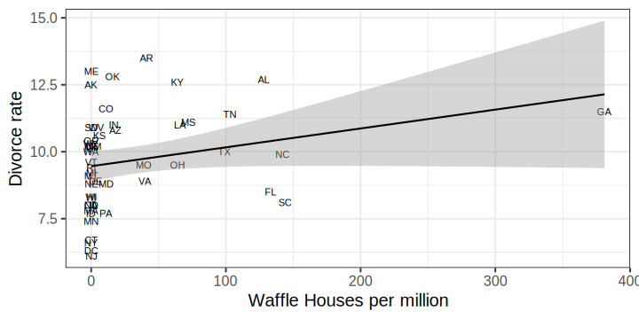
On observe un lien positif entre le taux de mariage et le taux de divorce, mais est-ce qu’on peut vraiment dire que le mariage “cause” le divorce ?
df1$Marriage.s <- (df1$Marriage - mean(df1$Marriage) ) / sd(df1$Marriage)
df1 %>%
ggplot(aes(x = Marriage.s, y = Divorce) ) +
geom_point(pch = 21, color = "white", fill = "black", size = 5, alpha = 0.8) +
geom_smooth(method = "lm", color = "black", se = TRUE) +
theme_bw(base_size = 20)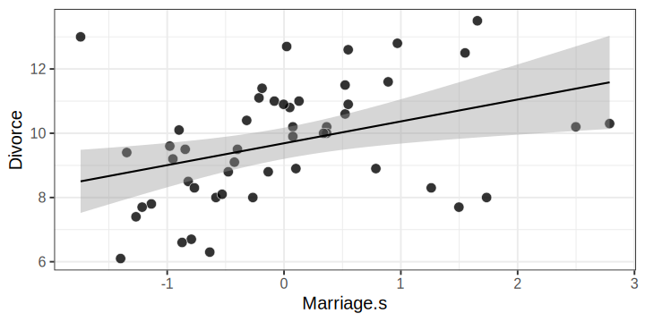
On observe l’association inverse entre le taux de divorce et l’âge médian de mariage.
df1$MedianAgeMarriage.s <- (df1$MedianAgeMarriage - mean(df1$MedianAgeMarriage) ) /
sd(df1$MedianAgeMarriage)
df1 %>%
ggplot(aes(x = MedianAgeMarriage.s, y = Divorce) ) +
geom_point(pch = 21, color = "white", fill = "black", size = 5, alpha = 0.8) +
geom_smooth(method = "lm", color = "black", se = TRUE) +
theme_bw(base_size = 20)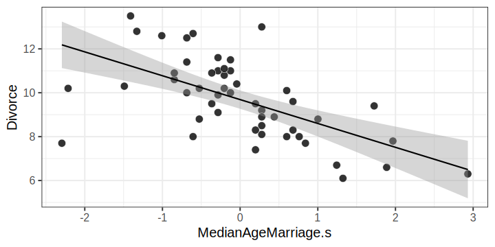
On peut représenter nos trois variables principales sur une carte des 50 états.
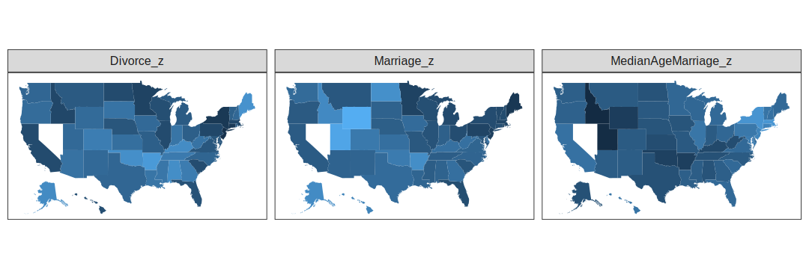
4.1.1.1 Influence du taux de mariage
\[ \begin{aligned} \color{orangered}{D_{i}} \ &\color{orangered}{\sim \mathrm{Normal}(\mu_{i}, \sigma)} \\ \color{black}{\mu_{i}} \ &\color{black}{= \alpha + \beta_{R} R_{i}} \\ \color{steelblue}{\alpha} \ &\color{steelblue}{\sim \mathrm{Normal}(10, 10)} \\ \color{steelblue}{\beta_{R}} \ &\color{steelblue}{\sim \mathrm{Normal}(0, 1)} \\ \color{steelblue}{\sigma} \ &\color{steelblue}{\sim \mathrm{Exponential}(0.01)} \\ \end{aligned} \]
priors <- c(
prior(normal(10, 10), class = Intercept),
prior(normal(0, 1), class = b),
prior(exponential(0.01), class = sigma)
)
mod1 <- brm(
Divorce ~ 1 + Marriage.s,
family = gaussian(),
prior = priors,
data = df1
)…
summary(mod1)## Family: gaussian
## Links: mu = identity; sigma = identity
## Formula: Divorce ~ 1 + Marriage.s
## Data: df1 (Number of observations: 50)
## Draws: 4 chains, each with iter = 2000; warmup = 1000; thin = 1;
## total post-warmup draws = 4000
##
## Population-Level Effects:
## Estimate Est.Error l-95% CI u-95% CI Rhat Bulk_ESS Tail_ESS
## Intercept 9.69 0.25 9.18 10.18 1.00 3591 2543
## Marriage.s 0.64 0.24 0.18 1.12 1.00 3611 2899
##
## Family Specific Parameters:
## Estimate Est.Error l-95% CI u-95% CI Rhat Bulk_ESS Tail_ESS
## sigma 1.75 0.18 1.44 2.15 1.00 3423 2187
##
## Draws were sampled using sampling(NUTS). For each parameter, Bulk_ESS
## and Tail_ESS are effective sample size measures, and Rhat is the potential
## scale reduction factor on split chains (at convergence, Rhat = 1).4.1.1.2 Influence de l’âge médian de mariage
\[ \begin{aligned} \color{orangered}{D_{i}} \ &\color{orangered}{\sim \mathrm{Normal}(\mu_{i}, \sigma)} \\ \color{black}{\mu_{i}} \ &\color{black}{= \alpha + \beta_{A} A_{i}} \\ \color{steelblue}{\alpha} \ &\color{steelblue}{\sim \mathrm{Normal}(10, 10)} \\ \color{steelblue}{\beta_{A}} \ &\color{steelblue}{\sim \mathrm{Normal}(0, 1)} \\ \color{steelblue}{\sigma} \ &\color{steelblue}{\sim \mathrm{Exponential}(0.01)} \\ \end{aligned} \]
priors <- c(
prior(normal(10, 10), class = Intercept),
prior(normal(0, 1), class = b),
prior(exponential(0.01), class = sigma)
)
mod2 <- brm(
Divorce ~ 1 + MedianAgeMarriage.s,
family = gaussian(),
prior = priors,
data = df1
)…
summary(mod2)## Family: gaussian
## Links: mu = identity; sigma = identity
## Formula: Divorce ~ 1 + MedianAgeMarriage.s
## Data: df1 (Number of observations: 50)
## Draws: 4 chains, each with iter = 2000; warmup = 1000; thin = 1;
## total post-warmup draws = 4000
##
## Population-Level Effects:
## Estimate Est.Error l-95% CI u-95% CI Rhat Bulk_ESS Tail_ESS
## Intercept 9.69 0.21 9.28 10.10 1.00 4349 2851
## MedianAgeMarriage.s -1.04 0.21 -1.46 -0.62 1.00 3592 2806
##
## Family Specific Parameters:
## Estimate Est.Error l-95% CI u-95% CI Rhat Bulk_ESS Tail_ESS
## sigma 1.52 0.16 1.24 1.88 1.00 3454 2857
##
## Draws were sampled using sampling(NUTS). For each parameter, Bulk_ESS
## and Tail_ESS are effective sample size measures, and Rhat is the potential
## scale reduction factor on split chains (at convergence, Rhat = 1).4.1.2 Régression multiple
Quelle est la valeur prédictive d’une variable, une fois que je connais tous les autres prédicteurs ?
\[ \begin{aligned} \color{orangered}{D_{i}} \ &\color{orangered}{\sim \mathrm{Normal}(\mu_{i}, \sigma)} \\ \color{black}{\mu_{i}} \ &\color{black}{= \alpha + \beta_{R}R_{i} + \beta_{A} A_{i}} \\ \color{steelblue}{\alpha} \ &\color{steelblue}{\sim \mathrm{Normal}(10, 10)} \\ \color{steelblue}{\beta_{R}, \beta_{A}} \ &\color{steelblue}{\sim \mathrm{Normal}(0, 1)} \\ \color{steelblue}{\sigma} \ &\color{steelblue}{\sim \mathrm{Exponential}(0.01)} \\ \end{aligned} \]
Ce modèle répond à deux questions :
- Une fois connue le taux de mariage, quelle valeur ajoutée apporte la connaissance de l’âge médian du mariage ?
- Une fois connu l’âge médian du mariage, quelle valeur ajoutée apporte la connaissance de le taux de mariage ?
priors <- c(
prior(normal(10, 10), class = Intercept),
prior(normal(0, 1), class = b),
prior(exponential(0.01), class = sigma)
)
mod3 <- brm(
Divorce ~ 1 + Marriage.s + MedianAgeMarriage.s,
family = gaussian(),
prior = priors,
data = df1
)Interprétation : Une fois qu’on connait l’âge median de mariage dans un état, connaître le taux de mariage de cet état n’apporte pas vraiment d’information supplémentaire…
summary(mod3)## Family: gaussian
## Links: mu = identity; sigma = identity
## Formula: Divorce ~ 1 + Marriage.s + MedianAgeMarriage.s
## Data: df1 (Number of observations: 50)
## Draws: 4 chains, each with iter = 2000; warmup = 1000; thin = 1;
## total post-warmup draws = 4000
##
## Population-Level Effects:
## Estimate Est.Error l-95% CI u-95% CI Rhat Bulk_ESS Tail_ESS
## Intercept 9.69 0.22 9.27 10.13 1.00 3503 2328
## Marriage.s -0.12 0.30 -0.69 0.49 1.00 2995 2827
## MedianAgeMarriage.s -1.12 0.30 -1.73 -0.50 1.00 2955 2447
##
## Family Specific Parameters:
## Estimate Est.Error l-95% CI u-95% CI Rhat Bulk_ESS Tail_ESS
## sigma 1.52 0.16 1.25 1.87 1.00 3295 3036
##
## Draws were sampled using sampling(NUTS). For each parameter, Bulk_ESS
## and Tail_ESS are effective sample size measures, and Rhat is the potential
## scale reduction factor on split chains (at convergence, Rhat = 1).4.1.2.1 Visualiser les prédictions du modèle
On peut comparer le taux de divorce observé dans chaque état au taux de divorce prédit par notre modèle (la ligne diagonale représente une prédiction parfaite).
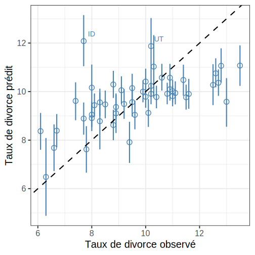
En plus de l’interprétation des paramètres, il est important d’évaluer les prédictions du modèle en les comparant aux données observées. Cela nous permet de savoir si le modèle rend bien compte des données et (surtout) où est-ce que le modèle échoue.
pp_check(mod3, type = "intervals", nsamples = 1e2, prob = 0.5, prob_outer = 0.95) +
theme_bw(base_size = 20) + labs(x = "État", y = "Taux de divorce")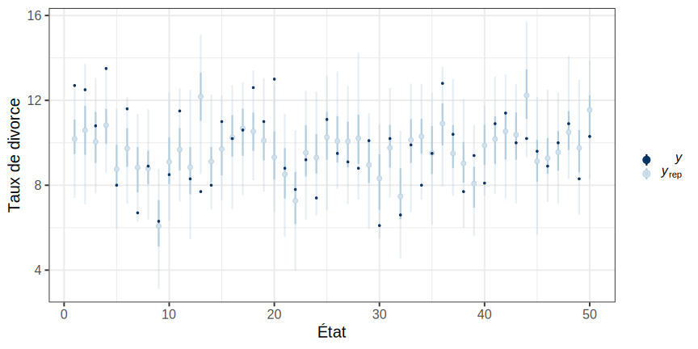
…
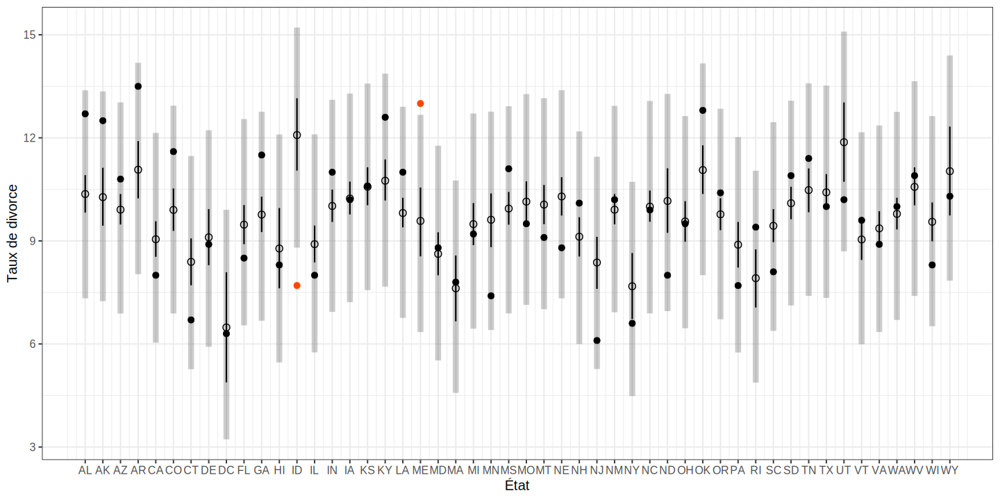
4.1.3 Toujours plus de prédicteurs
Pourquoi ne pas simplement construire un modèle incluant tous les prédicteurs et regarder ce qu’il se passe ?
- Raison n°1 : Multicolinéarité
- Raison n°2 : Post-treatment bias
- Raison n°3 : Overfitting (cf. Cours n°07)
4.1.3.1 Multicolinéarité
Situation dans laquelle certains prédicteurs sont très fortement corrêlés. Par exemple, essayons de prédire la taille d’un individu par la taille de ses jambes.
set.seed(666) # afin de pouvoir reproduire les résultats
N <- 100 # nombre d'individus
height <- rnorm(N, 179, 5) # génère N observations
leg_prop <- runif(N, 0.4, 0.5) # taille des jambes (proportion taille totale)
leg_left <- leg_prop * height + rnorm(N, 0, 0.5) # taille jambe gauche (+ erreur)
leg_right <- leg_prop * height + rnorm(N, 0, 0.5) # taille jambe droite (+ erreur)
df2 <- data.frame(height, leg_left, leg_right) # création d'une dataframe
head(df2) # affiche les six première lignes## height leg_left leg_right
## 1 182.7666 75.50967 76.00645
## 2 189.0718 81.10741 82.18046
## 3 177.2243 71.43856 71.49741
## 4 189.1408 82.81510 82.54405
## 5 167.9156 82.70860 84.00048
## 6 182.7920 84.86230 84.19933On fit un modèle avec deux prédicteurs : un pour la taille de chaque jambe.
priors <- c(
prior(normal(174, 10), class = Intercept),
prior(normal(0, 10), class = b),
prior(exponential(0.01), class = sigma)
)
mod4 <- brm(
height ~ 1 + leg_left + leg_right,
prior = priors,
family = gaussian,
data = df2
)Les estimations semblent étranges… mais le modèle ne fait que répondre à la question qu’on lui pose : Une fois que je connais la taille de la jambe gauche, quelle est la valeur prédictive de la taille de la jambe droite (et vice versa) ?
summary(mod4) # look at the SE...## Family: gaussian
## Links: mu = identity; sigma = identity
## Formula: height ~ 1 + leg_left + leg_right
## Data: df2 (Number of observations: 100)
## Draws: 4 chains, each with iter = 2000; warmup = 1000; thin = 1;
## total post-warmup draws = 4000
##
## Population-Level Effects:
## Estimate Est.Error l-95% CI u-95% CI Rhat Bulk_ESS Tail_ESS
## Intercept 152.82 7.44 138.29 167.72 1.00 3828 2264
## leg_left 0.52 0.75 -0.93 2.02 1.00 1543 1591
## leg_right -0.20 0.75 -1.71 1.24 1.00 1558 1604
##
## Family Specific Parameters:
## Estimate Est.Error l-95% CI u-95% CI Rhat Bulk_ESS Tail_ESS
## sigma 4.94 0.35 4.30 5.67 1.00 2462 2260
##
## Draws were sampled using sampling(NUTS). For each parameter, Bulk_ESS
## and Tail_ESS are effective sample size measures, and Rhat is the potential
## scale reduction factor on split chains (at convergence, Rhat = 1).Comment traquer la colinéarité de deux prédicteurs ? En représentant la distribution postérieure de ces deux paramètres.
pairs(mod4, pars = parnames(mod4)[1:3])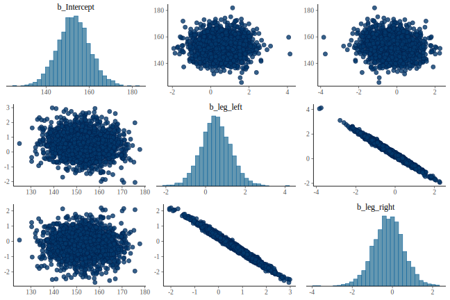
Comment traquer la colinéarité de deux prédicteurs ? En représentant la distribution postérieure de ces deux paramètres.
post <- posterior_samples(mod4)
post %>%
ggplot(aes(x = b_leg_left, y = b_leg_right) ) +
geom_point(pch = 21, size = 4, color = "white", fill = "black", alpha = 0.5) +
theme_bw(base_size = 20) +
labs(x = expression(beta[gauche]), y = expression(beta[droite]) )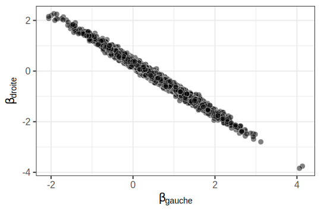
Le modèle précédent peut se réécrire en faisant apparaitre la somme des deux prédicteurs \(\beta_{1}\) et \(\beta_{2}\).
\[ \begin{aligned} y_{i} &\sim \mathrm{Normal}(\mu_{i}, \sigma) \\ \mu_{i} &= \alpha + (\beta_{1} + \beta_{2}) x_{i} \end{aligned} \]
library(BEST)
sum_legs <- post$b_leg_left + post$b_leg_right
plotPost(sum_legs, xlab = expression(beta[1] + beta[2]), compVal = 0)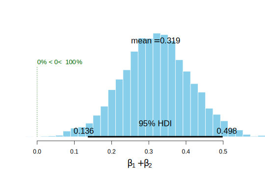
On crée un nouveau modèle avec seulement une jambe.
priors <- c(
prior(normal(174, 10), class = Intercept),
prior(normal(0, 10), class = b),
prior(exponential(0.01), class = sigma)
)
mod5 <- brm(
height ~ 1 + leg_left,
prior = priors,
family = gaussian,
data = df2
)En utilisant comme prédicteur une seule jambe, on retrouve l’estimation qui correspondait à la somme des deux pentes dans le modèle précédent.
summary(mod5)## Family: gaussian
## Links: mu = identity; sigma = identity
## Formula: height ~ 1 + leg_left
## Data: df2 (Number of observations: 100)
## Draws: 4 chains, each with iter = 2000; warmup = 1000; thin = 1;
## total post-warmup draws = 4000
##
## Population-Level Effects:
## Estimate Est.Error l-95% CI u-95% CI Rhat Bulk_ESS Tail_ESS
## Intercept 152.70 7.34 138.01 166.67 1.00 4158 2882
## leg_left 0.32 0.09 0.15 0.50 1.00 4144 3016
##
## Family Specific Parameters:
## Estimate Est.Error l-95% CI u-95% CI Rhat Bulk_ESS Tail_ESS
## sigma 4.93 0.37 4.29 5.76 1.00 3810 2551
##
## Draws were sampled using sampling(NUTS). For each parameter, Bulk_ESS
## and Tail_ESS are effective sample size measures, and Rhat is the potential
## scale reduction factor on split chains (at convergence, Rhat = 1).4.1.3.2 Post-treatment bias
Problèmes qui arrivent lorsqu’on inclut des prédicteurs qui sont eux-mêmes définis directement ou indirectement par d’autres prédicteurs inclus dans le modèle.
Supposons par exemple qu’on s’intéresse à la pousse des plantes en serre. On voudrait savoir quel traitement permettant de réduire la présence de champignons améliore la pousse des plantes.
On commence donc par planter et laisser germer des graines, mesurer la taille initiale des pousses, puis appliquer différents traitements.
Enfin, on mesure à la fin de l’expérience la taille finale de chaque plante et la présence de champignons.
# nombre de plantes
N <- 100
# on simule différentes tailles à l'origine
h0 <- rnorm(N, mean = 10, sd = 2)
# on assigne différents traitements et on
# simule la présence de funguns et la pousse des plantes
treatment <- rep(0:1, each = N / 2)
fungus <- rbinom(N, size = 1, prob = 0.5 - treatment * 0.4)
h1 <- h0 + rnorm(N, mean = 5 - 3 * fungus)
# on rassemble les données dans une dataframe
df3 <- data.frame(h0, h1, treatment, fungus)
head(df3)## h0 h1 treatment fungus
## 1 8.842591 13.820383 0 0
## 2 5.094913 7.844256 0 1
## 3 9.423155 10.763637 0 1
## 4 13.008697 17.141846 0 0
## 5 11.566223 17.161368 0 0
## 6 9.520248 16.648277 0 0…
\[ \begin{aligned} \color{orangered}{h_{i}} \ &\color{orangered}{\sim \mathrm{Normal}(\mu_{i}, \sigma)} \\ \color{black}{\mu_{i}} \ &\color{black}{= \alpha + \beta_{1} h0_{i} + \beta_{2} T_{i} + \beta_{3} F_{i}} \\ \color{steelblue}{\alpha} \ &\color{steelblue}{\sim \mathrm{Normal}(0, 10)} \\ \color{steelblue}{\beta_{1}, \beta_{2}, \beta_{3}} \ &\color{steelblue}{\sim \mathrm{Normal}(0, 10)} \\ \color{steelblue}{\sigma} \ &\color{steelblue}{\sim \mathrm{Exponential}(0.01)} \end{aligned} \]
priors <- c(
prior(normal(0, 10), class = Intercept),
prior(normal(0, 10), class = b),
prior(exponential(0.01), class = sigma)
)
mod6 <- brm(
h1 ~ 1 + h0 + treatment + fungus,
prior = priors,
family = gaussian,
data = df3
)On remarque que l’effet du traitement est négligeable. La présence des champignons (fungus) est une conséquence de l’application du treatment. On demande au modèle si le traitement a une influence sachant que la plante a (ou n’a pas) développé de champignons…
summary(mod6)## Family: gaussian
## Links: mu = identity; sigma = identity
## Formula: h1 ~ 1 + h0 + treatment + fungus
## Data: df3 (Number of observations: 100)
## Draws: 4 chains, each with iter = 2000; warmup = 1000; thin = 1;
## total post-warmup draws = 4000
##
## Population-Level Effects:
## Estimate Est.Error l-95% CI u-95% CI Rhat Bulk_ESS Tail_ESS
## Intercept 4.32 0.49 3.37 5.28 1.00 4412 2880
## h0 1.07 0.04 0.99 1.16 1.00 4667 2955
## treatment -0.09 0.20 -0.49 0.31 1.00 4529 2326
## fungus -2.65 0.23 -3.09 -2.18 1.00 4241 2800
##
## Family Specific Parameters:
## Estimate Est.Error l-95% CI u-95% CI Rhat Bulk_ESS Tail_ESS
## sigma 0.91 0.07 0.79 1.05 1.00 4198 3139
##
## Draws were sampled using sampling(NUTS). For each parameter, Bulk_ESS
## and Tail_ESS are effective sample size measures, and Rhat is the potential
## scale reduction factor on split chains (at convergence, Rhat = 1).Nous nous intéressons plutôt à l’influence du traitement sur la pousse. Il suffit de fitter un modèle sans la variable fungus. Remarque : il fait sens de prendre en compte \(h0\), la taille initiale, car les différences observées pourraient masquer l’effet du traitement.
mod7 <- brm(
h1 ~ 1 + h0 + treatment,
prior = priors,
family = gaussian,
data = df3
)Note : on pourrait également utiliser la méthode update()…
mod7 <- update(mod6, formula = h1 ~ 1 + h0 + treatment)summary(mod7)## Family: gaussian
## Links: mu = identity; sigma = identity
## Formula: h1 ~ 1 + h0 + treatment
## Data: df3 (Number of observations: 100)
## Draws: 4 chains, each with iter = 2000; warmup = 1000; thin = 1;
## total post-warmup draws = 4000
##
## Population-Level Effects:
## Estimate Est.Error l-95% CI u-95% CI Rhat Bulk_ESS Tail_ESS
## Intercept 2.24 0.70 0.80 3.59 1.00 4401 3233
## h0 1.17 0.07 1.04 1.31 1.00 4277 3165
## treatment 0.74 0.28 0.19 1.29 1.00 4764 3296
##
## Family Specific Parameters:
## Estimate Est.Error l-95% CI u-95% CI Rhat Bulk_ESS Tail_ESS
## sigma 1.42 0.10 1.24 1.63 1.00 4106 2988
##
## Draws were sampled using sampling(NUTS). For each parameter, Bulk_ESS
## and Tail_ESS are effective sample size measures, and Rhat is the potential
## scale reduction factor on split chains (at convergence, Rhat = 1).L’influence du traitement est maintenant forte et positive…
4.1.4 Prédicteurs catégoriels
data(Howell1)
df4 <- Howell1
str(df4)## 'data.frame': 544 obs. of 4 variables:
## $ height: num 152 140 137 157 145 ...
## $ weight: num 47.8 36.5 31.9 53 41.3 ...
## $ age : num 63 63 65 41 51 35 32 27 19 54 ...
## $ male : int 1 0 0 1 0 1 0 1 0 1 ...Le genre est codé comme une dummy variable, c’est à dire une variable où chaque modalité est représentée soit par \(0\) soit par \(1\). On peut imaginer que cette nouvelle variable active le paramètre uniquement pour la catégorie codée \(1\), et le désactive pour la catégorie codée \(0\).
\[ \begin{aligned} \color{orangered}{h_{i}} \ &\color{orangered}{\sim \mathrm{Normal}(\mu_{i}, \sigma)} \\ \color{black}{\mu_{i}} \ &\color{black}{= \alpha + \beta_{m}m_{i}} \\ \color{steelblue}{\alpha} \ &\color{steelblue}{\sim \mathrm{Normal}(178, 100)} \\ \color{steelblue}{\beta_{m}} \ &\color{steelblue}{\sim \mathrm{Normal}(0, 10)} \\ \color{steelblue}{\sigma} \ &\color{steelblue}{\sim \mathrm{Uniform}(0, 50)} \end{aligned} \]
priors <- c(
prior(normal(178, 100), class = Intercept),
prior(normal(0, 10), class = b),
prior(exponential(0.01), class = sigma)
)
mod8 <- brm(
height ~ 1 + male,
prior = priors,
family = gaussian,
data = df4
)L’intercept \(\alpha\) représente la taille moyenne des femmes (car \(\mu_{i} = \beta_{m}(0) = \alpha\)).
fixef(mod8) # retrieves fixed effects## Estimate Est.Error Q2.5 Q97.5
## Intercept 134.828068 1.633549 131.704599 138.07054
## male 7.284156 2.301133 2.746952 11.67705La pente \(\beta\) nous indique la différence de taille moyenne entre les hommes et les femmes. Pour obtenir la taille moyenne des hommes, il suffit donc d’ajouter \(\alpha\) et \(\beta\).
post <- posterior_samples(mod8)
mu.male <- post$b_Intercept + post$b_male
quantile(x = mu.male, probs = c(0.025, 0.5, 0.975) )## 2.5% 50% 97.5%
## 138.7874 142.1054 145.4737Au lieu d’utiliser un paramètre pour la différence entre les deux catégories, on pourrait estimer un paramètre par catégorie…
\[ \begin{aligned} h_{i} &\sim \mathrm{Normal}(\mu_{i}, \sigma) \\ \mu_{i} &= \alpha_{f}(1 - m_{i}) + \alpha_{h} m_{i} \\ \end{aligned} \]
Cette formulation est strictement équivalente à la précedente car :
\[ \begin{aligned} \mu_{i} &= \alpha_{f}(1 - m_{i}) + \alpha_{h} m_{i} \\ &= \alpha_{f} + (\alpha_{m} - \alpha_{f}) m_{i} \\ \end{aligned} \]
où \((\alpha_{m} - \alpha_{f})\) est égal à la différence entre la moyenne des hommes et la moyenne des femmes (i.e., \(\beta_{m}\)).
# on crée une nouvelle colonne pour les femmes
df4 <- df4 %>% mutate(female = 1 - male)
priors <- c(
# il n'y a plus d'intercept dans ce modèle
# prior(normal(178, 100), class = Intercept),
prior(normal(0, 10), class = b),
prior(exponential(0.01), class = sigma)
)
mod9 <- brm(
height ~ 0 + female + male,
prior = priors,
family = gaussian,
data = df4
)summary(mod9)## Family: gaussian
## Links: mu = identity; sigma = identity
## Formula: height ~ 0 + female + male
## Data: df4 (Number of observations: 544)
## Draws: 4 chains, each with iter = 2000; warmup = 1000; thin = 1;
## total post-warmup draws = 4000
##
## Population-Level Effects:
## Estimate Est.Error l-95% CI u-95% CI Rhat Bulk_ESS Tail_ESS
## female 131.17 1.63 127.96 134.31 1.00 4102 2760
## male 138.20 1.73 134.73 141.60 1.00 4251 3212
##
## Family Specific Parameters:
## Estimate Est.Error l-95% CI u-95% CI Rhat Bulk_ESS Tail_ESS
## sigma 27.67 0.86 26.05 29.35 1.00 3521 3110
##
## Draws were sampled using sampling(NUTS). For each parameter, Bulk_ESS
## and Tail_ESS are effective sample size measures, and Rhat is the potential
## scale reduction factor on split chains (at convergence, Rhat = 1).4.1.4.1 Prédicteurs catégoriels, taille d’effet
\[ \rho^{2} = \dfrac{\sum_{i=1}^{n} \pi_{i}(\beta_{i} - \beta)^{2}}{\sigma^{2} + \sum_{i = 1}^{n} \pi_{i}(\beta_{i} - \beta)^{2}} \]
post <- posterior_samples(mod9)
pi <- sum(df4$male) / length(df4$male) # proportion of males
beta <- post$b_male # posterior samples for beta
sigma <- post$sigma # posterior samples for sigma
f1 <- pi * (beta - beta * pi)^2
rho <- f1 / (f1 + sigma^2)\[ \rho^{2} = \dfrac{\sum_{i=1}^{n} \pi_{i}(\beta_{i} - \beta)^{2}}{\sigma^{2} + \sum_{i=1}^{n} \pi_{i}(\beta_{i} - \beta)^{2}} \]
plotPost(rho, showMode = TRUE, cex = 2, xlab = expression(rho) )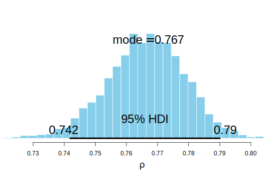
…
\[ \text{Cohen's d} = \frac{\text{différence des moyennes}}{\text{écart-type}} \]
plotPost((post$b_male - post$b_female) / post$sigma, cex = 2, xlab = expression(delta) )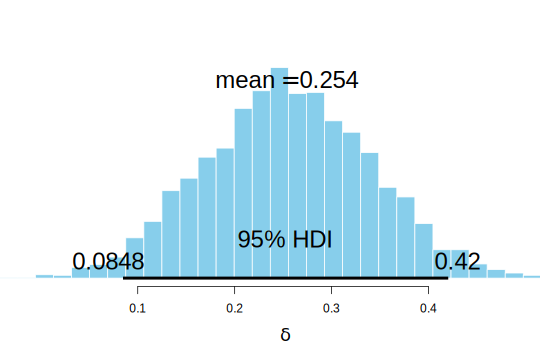
4.1.5 Prédicteurs catégoriels, nombre de catégories > 3
data(milk)
df5 <- milk
str(df5)## 'data.frame': 29 obs. of 8 variables:
## $ clade : Factor w/ 4 levels "Ape","New World Monkey",..: 4 4 4 4 4 2 2 2 2 2 ...
## $ species : Factor w/ 29 levels "A palliata","Alouatta seniculus",..: 11 8 9 10 16 2 1 6 28 27 ...
## $ kcal.per.g : num 0.49 0.51 0.46 0.48 0.6 0.47 0.56 0.89 0.91 0.92 ...
## $ perc.fat : num 16.6 19.3 14.1 14.9 27.3 ...
## $ perc.protein : num 15.4 16.9 16.9 13.2 19.5 ...
## $ perc.lactose : num 68 63.8 69 71.9 53.2 ...
## $ mass : num 1.95 2.09 2.51 1.62 2.19 5.25 5.37 2.51 0.71 0.68 ...
## $ neocortex.perc: num 55.2 NA NA NA NA ...Règle : pour \(k\) catégories, nous aurons besoin de \(k - 1\) dummy variables. Pas la peine de créer une variable pour ape, qui sera notre intercept.
df5$clade.NWM <- ifelse(df5$clade == "New World Monkey", 1, 0)
df5$clade.OWM <- ifelse(df5$clade == "Old World Monkey", 1, 0)
df5$clade.S <- ifelse(df5$clade == "Strepsirrhine", 1, 0)…
\[ \begin{aligned} \color{orangered}{k_{i}} \ &\color{orangered}{\sim \mathrm{Normal}(\mu_{i}, \sigma)} \\ \color{black}{\mu_{i}} \ &\color{black}{= \alpha + \beta_{NWM}NWM_{i} + \beta_{OWM}OWM_{i} + \beta_{S}S_{i}} \\ \color{steelblue}{\alpha} \ &\color{steelblue}{\sim \mathrm{Normal}(0.6, 10)} \\ \color{steelblue}{\beta_{NWM}, \beta_{OWM}, \beta_{S}} \ &\color{steelblue}{\sim \mathrm{Normal}(0, 1)} \\ \color{steelblue}{\sigma} \ &\color{steelblue}{\sim \mathrm{Exponential}(0.01)} \end{aligned} \]
…
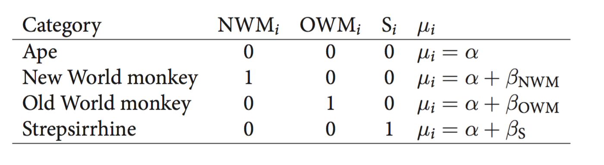
…
priors <- c(
prior(normal(0.6, 10), class = Intercept),
prior(normal(0, 1), class = b),
prior(exponential(0.01), class = sigma)
)
mod10 <- brm(
kcal.per.g ~ 1 + clade.NWM + clade.OWM + clade.S,
prior = priors,
family = gaussian,
data = df5
)summary(mod10)## Family: gaussian
## Links: mu = identity; sigma = identity
## Formula: kcal.per.g ~ 1 + clade.NWM + clade.OWM + clade.S
## Data: df5 (Number of observations: 29)
## Draws: 4 chains, each with iter = 2000; warmup = 1000; thin = 1;
## total post-warmup draws = 4000
##
## Population-Level Effects:
## Estimate Est.Error l-95% CI u-95% CI Rhat Bulk_ESS Tail_ESS
## Intercept 0.55 0.04 0.46 0.63 1.00 3283 2606
## clade.NWM 0.17 0.06 0.04 0.29 1.00 3340 2561
## clade.OWM 0.24 0.07 0.10 0.37 1.00 3397 2943
## clade.S -0.04 0.07 -0.18 0.11 1.00 3400 2890
##
## Family Specific Parameters:
## Estimate Est.Error l-95% CI u-95% CI Rhat Bulk_ESS Tail_ESS
## sigma 0.13 0.02 0.10 0.18 1.00 3226 2843
##
## Draws were sampled using sampling(NUTS). For each parameter, Bulk_ESS
## and Tail_ESS are effective sample size measures, and Rhat is the potential
## scale reduction factor on split chains (at convergence, Rhat = 1).…
# retrieves posterior samples
post <- posterior_samples(mod10)
# retrieves posterior samples for each category
mu.ape <- post$b_Intercept
mu.NWM <- post$b_Intercept + post$b_clade.NWM
mu.OWM <- post$b_Intercept + post$b_clade.OWM
mu.S <- post$b_Intercept + post$b_clade.Sprecis(data.frame(mu.ape, mu.NWM, mu.OWM, mu.S), prob = 0.95)## mean sd 2.5% 97.5% histogram
## mu.ape 0.5472530 0.04416200 0.4632161 0.6345129 ▁▁▂▇▇▂▁▁
## mu.NWM 0.7145580 0.04381130 0.6283760 0.8001637 ▁▁▅▇▃▁▁
## mu.OWM 0.7866443 0.05449798 0.6804187 0.8938789 ▁▁▁▃▇▇▂▁▁▁
## mu.S 0.5092347 0.05951719 0.3911451 0.6296908 ▁▁▁▂▇▇▃▁▁▁▁Si on s’intéresse à la différence entre deux groupes, on peut calculer la distribution postérieure de cette différence.
diff.NWM.OWM <- mu.NWM - mu.OWM
quantile(diff.NWM.OWM, probs = c(0.025, 0.5, 0.975) )## 2.5% 50% 97.5%
## -0.20781665 -0.07280640 0.05937144plotPost(diff.NWM.OWM, compVal = 0, ROPE = c(-0.1, 0.1) )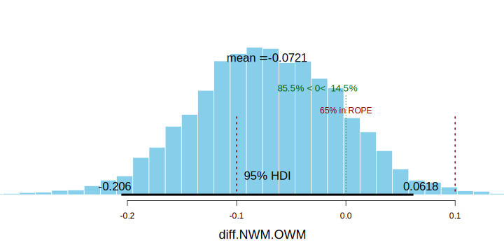
Une autre manière de considérer les variables catégorielles consiste à construire un vecteur d’intercepts, avec un intercept par catégorie.
\[ \begin{aligned} \color{orangered}{k_{i}} \ &\color{orangered}{\sim \mathrm{Normal}(\mu_{i}, \sigma)} \\ \color{black}{\mu_{i}} \ &\color{black}{= \alpha_{\text{clade}[i]}} \\ \color{steelblue}{\alpha_{\text{clade}[i]}} \ &\color{steelblue}{\sim \mathrm{Normal}(0.6, 10)} \\ \color{steelblue}{\sigma} \ &\color{steelblue}{\sim \mathrm{Exponential}(0.01)} \end{aligned} \]
Comme on a vu avec l’exemple du genre, brms “comprend” automatiquement que c’est ce qu’on veut faire lorsqu’on fit un modèle sans intercept et avec un prédicteur catégoriel (codé en facteur).
priors <- c(
prior(normal(0.6, 10), class = b),
prior(exponential(0.01), class = sigma)
)
mod11 <- brm(
# modèle sans intercept avec seulement un prédicteur catégoriel (facteur)
kcal.per.g ~ 0 + clade,
prior = priors,
family = gaussian,
data = df5
)summary(mod11)## Family: gaussian
## Links: mu = identity; sigma = identity
## Formula: kcal.per.g ~ 0 + clade
## Data: df5 (Number of observations: 29)
## Draws: 4 chains, each with iter = 2000; warmup = 1000; thin = 1;
## total post-warmup draws = 4000
##
## Population-Level Effects:
## Estimate Est.Error l-95% CI u-95% CI Rhat Bulk_ESS Tail_ESS
## cladeApe 0.54 0.04 0.46 0.63 1.00 4789 2503
## cladeNewWorldMonkey 0.72 0.04 0.63 0.81 1.00 5125 2714
## cladeOldWorldMonkey 0.79 0.05 0.69 0.89 1.00 4834 2979
## cladeStrepsirrhine 0.51 0.06 0.40 0.63 1.00 4667 2685
##
## Family Specific Parameters:
## Estimate Est.Error l-95% CI u-95% CI Rhat Bulk_ESS Tail_ESS
## sigma 0.13 0.02 0.10 0.17 1.00 3367 3005
##
## Draws were sampled using sampling(NUTS). For each parameter, Bulk_ESS
## and Tail_ESS are effective sample size measures, and Rhat is the potential
## scale reduction factor on split chains (at convergence, Rhat = 1).4.1.6 Interaction
Jusque là, les prédicteurs du modèle entretenaientt des relations mutuellement indépendantes. Et si nous souhaitions que ces relations soient conditionnelles, ou dépendantes les unes des autres ?
Par exempl e: on s’intéresse à la pousse des tulipes selon la quantité de lumière reçue et l’humidité du sol. Il se pourrait que la relation entre quantité de lumière reçue et pousse des tulipes soit différente selon l’humidité du sol. En d’autres termes, il se pourrait que la relation entre quantité de lumière reçue et pousse des tulipe soit conditionnelle à l’humidité du sol…
data(tulips)
df6 <- tulips
head(df6, 10)## bed water shade blooms
## 1 a 1 1 0.00
## 2 a 1 2 0.00
## 3 a 1 3 111.04
## 4 a 2 1 183.47
## 5 a 2 2 59.16
## 6 a 2 3 76.75
## 7 a 3 1 224.97
## 8 a 3 2 83.77
## 9 a 3 3 134.95
## 10 b 1 1 80.10Modèle sans interaction :
\[ \begin{aligned} B_{i} &\sim \mathrm{Normal}(\mu, \sigma) \\ \mu_{i} &= \alpha + \beta_{W} W_{i} + \beta_{S} S_{i} \\ \end{aligned} \]
Modèle avec interaction :
\[ \begin{aligned} B_{i} &\sim \mathrm{Normal}(\mu, \sigma) \\ \mu_{i} &= \alpha + \beta_{W} W_{i} + \beta_{S} S_{i} + \beta_{WS} W_{i} S_{i}\\ \end{aligned} \]
On centre les prédicteurs (pour faciliter l’interprétation des paramètres).
df6$shade.c <- df6$shade - mean(df6$shade)
df6$water.c <- df6$water - mean(df6$water)priors <- c(
prior(normal(130, 100), class = Intercept),
prior(normal(0, 100), class = b),
prior(exponential(0.01), class = sigma)
)
mod12 <- brm(
blooms ~ 1 + water.c + shade.c,
prior = priors,
family = gaussian,
data = df6
)mod13 <- brm(
blooms ~ 1 + water.c * shade.c,
# equivalent to blooms ~ 1 + water.c + shade.c + water.c:shade.c
prior = priors,
family = gaussian,
data = df6
)…
## term mod12 mod13
## 1 b_Intercept 129.12581 129.24273
## 2 b_water.c 74.47215 74.84815
## 3 b_shade.c -41.06619 -40.72284
## 4 sigma 63.28024 51.15140
## 5 lprior -22.20149 -27.73942
## 6 b_water.c:shade.c NA -51.55219L’intercept \(\alpha\) représente la valeur attendue de
bloomsquandwateretshadesont à 0 (i.e., la moyenne générale de la variable dépendante).La pente \(\beta_{W}\) nous donne la valeur attendue de changement de
bloomsquandwateraugmente d’une unité etshadeest à sa valeur moyenne. On voit qu’augmenter la quantité d’eau est très bénéfique.La pente \(\beta_{S}\) nous donne la valeur attendue de changement de
bloomsquandshadeaugmente d’une unité etwaterest à sa valeur moyenne. On voit qu’augmenter la “quantité d’ombre” (diminuer l’exposition à la lumière) est plutôt délétère.La pente \(\beta_{WS}\) nous renseigne sur l’effet attendu de
watersurbloomsquandshadeaugment d’une unité (et réciproquement).
Dans un modèle qui inclut un effet d’interaction, l’effet d’un prédicteur sur la mesure va dépendre de la valeur de l’autre prédicteur. La meilleure manière de représenter cette dépendance est de plotter la relation entre un prédicteur et la mesure, à différentes valeurs de l’autre prédicteur.
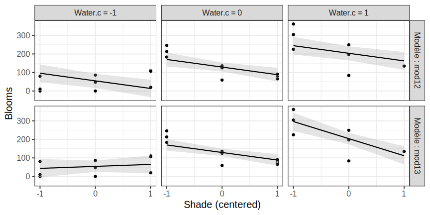
L’effet d’interaction nous indique que les tulipes ont besoin à la fois d’eau et de lumière pour pousser, mais aussi qu’à de faibles niveaux d’humidité, la luminosité a peu d’effet, tandis que cet effet est plus important à haut niveau d’humidité.
Cette explication vaut de manière symétrique pour l’effet de l’humidité sur la relation entre la luminosité et la pousse des plantes.